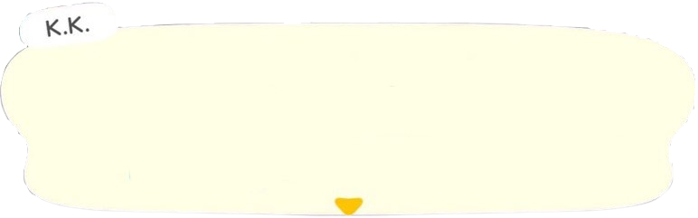

Hover over the animals!
Hi i'm K.K. Slider. I am a famous musician, and play songs on my guitar..
I'm Isabelle! I work as an assistant and secretary. Come to me with questions and concerns!
Animal Crossing (Animal Crossing: Population Growing) is first game in the Animal Crossing series to reach nations outside Japan (second overall game) The game was developed solely for the Nintendo GameCube.
Animal Crossing: Wild World was released in 2005 for the Nintendo DS. It is a follow-up to the 2001 Nintendo GameCube game Animal Crossing. The game sold a total of 11.75 million copies as of September 2020.
Animal Crossing: New Leaf is a game for the Nintendo 3DS released in 2012. It is the fourth main installment in the Animal Crossing series. What's different to New Leaf from other games is the player taking on the role of mayor of the town, having more control over it than in previous games.
Animal Crossing: New Horizons released on March 20, 2020 for the Nintendo Switch. In this game the player lives on a deserted island rather than in a town, which can develop into a town-like community as players progress through the game. The game is a critical and commercial success, selling over 39 million copies as of June 2022.